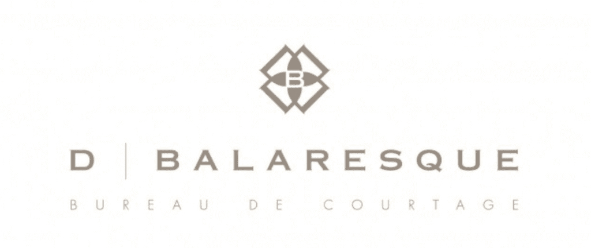
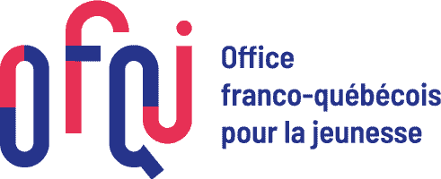

Et si vos solutions digitales comprenaient vraiment vos enjeux métier ?
On sait que la technique peut sembler obscure. Nous vous accompagnons dans le développement de vos outils métiers, en parlant votre langue, pas seulement celle des développeurs.
Nous avons réalisé des projets pour eux




On connaît votre métier
Choisissez votre secteur ou votre besoin : on vous montre les problèmes qu'on a résolus pour des entreprises comme la vôtre.
Seconde main & Réemploi
Stocks, estimation et prix de revente d'articles uniques
Négoce & Vin
Vente directe, commandes et tarifs pros
Santé
Des ressources qui aident vos publics à décider
Gestion de patrimoine
Pièces justificatives, échéances et reporting
Services aux entreprises & à la personne
Plannings, suivi des prestations et facturation
Retail & Logistique
Stocks, reprise en magasin, expéditions et inventaires
Comptabilité & Contrôle de gestion
Saisie, reportings et facturation électronique
Organismes publics & Gestion de dossiers
Candidatures, instruction et bilans
Connecter ses outils
Des outils qui se parlent, sans double saisie
De la ressource à la décision
Transformer vos contenus en outils d'aide à la décision
Espaces clients & accès sécurisés
Documents et informations partagés en sécurité
Outils sur mesure & IA
Remplacer vos Excel critiques, retrouver l'information
Des outils qui ont changé leur quotidien
Seconde main & RéemploiSynchroniser les stocks sur toutes les marketplaces
À compléter : chiffre clé LiLiVoir le cas d'usage → Organismes publicsCentraliser la réception des candidatures
À compléter : chiffre clé OFQJVoir le cas d'usage → La Maison GabinNégoce & VinDévelopper la vente directe sans alourdir la logistique
À compléter : chiffre clé Maison GabinVoir le cas d'usage →D'abord votre métier, ensuite l'outil
Chez Code4Good, nous concevons des outils numériques sur mesure qui s'intègrent aux métiers de nos clients pour répondre à leurs défis concrets. Notre objectif : améliorer efficacité, clarté et autonomie grâce à des solutions utiles et durables.
Nous commençons toujours par comprendre vos besoins, vos enjeux et votre fonctionnement. Notre approche repose sur trois piliers :
- une écoute active pour capter vos besoins métiers ;
- un design centré utilisateur pour des outils intuitifs ;
- un développement sur mesure, mêlant code et no-code, pour plus de flexibilité.
Ceux qui en parlent le mieux, c'est encore nos clients
« L'agence Code4Good a les capacités humaines et les compétences techniques pour la réussite des projets. Un accompagnement super professionnel pour des résultats ultra positifs. Je recommande et j'encourage. Foncez ! »
Des effets mesurables pour nos clients
Rencontrez la team derrière Code4Good
Nous sommes une équipe de développeurs, designers et chefs de projet au service de votre vision et d'un monde plus équitable et responsable.
On nous demande souvent
Combien coûte un projet avec Code4Good ?
Chaque projet est unique, et notre rôle, c'est de vous proposer la solution la plus adaptée à vos enjeux et à vos moyens. Que ce soit en no-code, avec un Excel bien pensé, ou via des technologies robustes et éprouvées, on trouve toujours un point de départ viable, testable et pérenne. On vous aide à prioriser, pour avancer avec l'essentiel et poser des bases solides pour la suite.
Est-ce que vous travaillez avec des petites structures ?
Oui ! Nous accompagnons aussi bien des startups, des associations ou des PME que des structures plus grandes. Tant qu'il y a un besoin métier et une envie de co-construire, nous sommes là. Nous adaptons notre approche selon vos moyens et vos ressources.
Est-ce que vous êtes une agence web ?
Oui, mais pas comme les autres. Code4Good est une agence spécialisée dans la conception de solutions numériques sur mesure. Notre différence ? Nous plongeons dans votre métier pour concevoir des outils qui s'alignent sur vos pratiques, vos utilisateurs et vos objectifs. Pas de solutions génériques : chaque projet est pensé sur mesure, avec une vraie logique de partenariat.
Faites-vous du no-code ou du développement classique ?
Les deux ! Nous utilisons le no-code quand cela permet d'aller plus vite et de réduire les coûts, et le développement sur mesure quand les besoins sont plus spécifiques. Nous mixons souvent les deux, pour offrir le meilleur compromis entre performance, agilité et budget.
Comment se passe un projet avec Code4Good ?
Dès le démarrage, on avance ensemble et en toute transparence. Une fois le projet lancé, nous organisons un rendez-vous chaque semaine pour suivre l'avancement, faire des démonstrations, ajuster les priorités ou répondre à vos questions. Et on parle votre langue : vous savez toujours où on en est, ce qu'on fait, pourquoi on le fait, et ce que ça change pour vous et vos utilisateurs.
Est-ce que vous travaillez à distance ?
Oui, mais pas uniquement. Nous avons une agence à Bordeaux et sommes toujours ravis de rencontrer nos clients en personne. En parallèle, nous avons l'habitude de travailler à distance de façon fluide et structurée : points réguliers en visio, outils collaboratifs, réactivité.
Discutons de votre projet
30 minutes avec un expert pour faire le point sur votre besoin. C'est offert, et sans engagement.